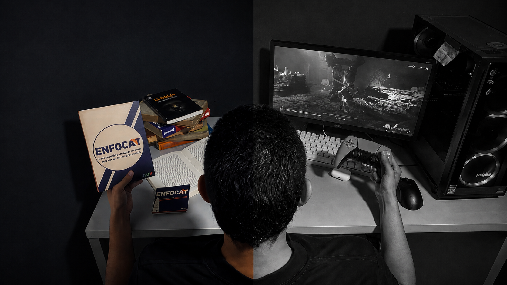

01
Tu día no termina cuando cierras el cuaderno.
Cuando tienes una entrega cerca, dormir puede parecer la actividad más fácil de sacrificar. El problema es que estudiar más horas no garantiza aprender mejor si llegas al siguiente día agotado.
El descanso forma parte de la recuperación y de la capacidad de mantener la atención. Por eso conviene pensar en el sueño como una parte de tu sistema de estudio, no como un premio que recibes después de terminar todo.
02
Estudiar hasta tarde no siempre compensa.
Una noche puntual no define tus hábitos, pero convertir las jornadas nocturnas en la estrategia principal puede hacer más difícil mantener una rutina estable. Si además acumulas tareas por procrastinar, puedes entrar en un ciclo de trabajar tarde, descansar poco y comenzar el día siguiente con menos energía.
Descansar también es preparar el próximo momento de enfoque.
La mejor estrategia es evitar que el descanso sea lo primero que sacrificas cada vez que tu planificación se desordena.
03
Crea señales que indiquen que el día termina.
Horario.
Busca una hora de descanso razonablemente consistente.
Transición.
Baja el ritmo y deja las tareas académicas fuera del cierre del día.
Entorno.
Reduce estímulos que te mantengan conectado al trabajo o a las redes.
04
Empieza con un cambio pequeño.
No intentes transformar toda tu noche de un día para otro. Elige una sola modificación: preparar tus cosas antes, dejar el celular lejos de la cama, adelantar gradualmente tu hora de desconexión o evitar llevar tareas a la cama.
Después observa qué pasa durante una semana. Una rutina útil es aquella que puedes repetir y ajustar, no aquella que funciona únicamente cuando todo sale perfecto.
Volver al blog ↗